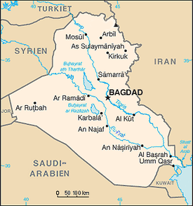

Välkommen till min sida!
Hej jag heter Ahmed men det viste du kanske redan, frågan som du
kanske verkligen vill fråga är, vem är Ahmed? Jo det kan vara en
lite svårare fråga att besvara eftersom att jag själv ibland inte
vet vem Ahmed verkligen är men jag hoppas jag kan ge dig lite mer
information om denna mystiska Ahmed med hjälp av denna hemsida. På
denna sida kan du hitta information om vem jag är och lite om min
bakgrund. Om du kollar på navigationen kommer du kunna hitta spel.
Under spel kommer du kunna veta lite mer om de spel jag spelar.
Lite om mig!

Bild av mitt hemland, Irak!
Så som sagt heter jag Ahmed. Jag är nu 18 år gammal och har bott i
Sverige i ungefär 11 år. Det är nämnligen så att jag är inte född
här i Sverige utan jag är faktiskt född i Baghdad, Irak! Jag växte
upp där tills jag blev cirka 7 år gammal och därefter behövde vi
flytta till Sverige då det var mycket oro som pågick i landet. När
vi väl flyttade hit så kunde jag absolut ingen svenska alls och
därmed behövde jag börja förskole klass istället för 1:an. Jag
arbetade hårt och lyckades lära mig ganska bra svenska på under 6
månader vilket därefter så blev jag bara bättre och bättre. Nu idag
skulle jag säga att jag kan prata flyttande svenska med ingen
dialekt (hoppas jag). Under de första 6 åren av min akademiska
"karriär" så gick jag vid en lokal skola i min stad som heter Freja
skolan. Innan 6:an började dock så bytte jag till en Internationell
Engelsk Skolan som ligger i Flemmingsberg som heter IES Hudding. Jag
gillade skolan ganska mycket eftersom att lärarna var bra samt så
hade jag många bra vänner. Spola fram några år till 9:an då jag
behövde välja vilken inriktning jag skulle ta i gymnasiet så var det
ett mycket svårt val. Jag hade ingen aning om vad jag ville bli i
framtiden (Jag vet fortfarande inte) men jag viste att jag gillade
matten ganska mycket samt så tyckte jag om att spela spel. Detta
ledde mig till att välja en teknik linje och eftersom att jag kände
redan en person på NTI så tyckte jag att det var nog ett bra val.
Jag har också haft ett intresse för datorer sedan innan och har
experimenterat runt med lite python vilekt jag tyckte var
intressant. Detta vara bara lite information om vem jag är och lite
om min akademiska bakgrund. Om du vill veta mer om t.ex mina
favorit spel eller mitt intresse för
anime
kan du klicka på orden eller använda navigationen.